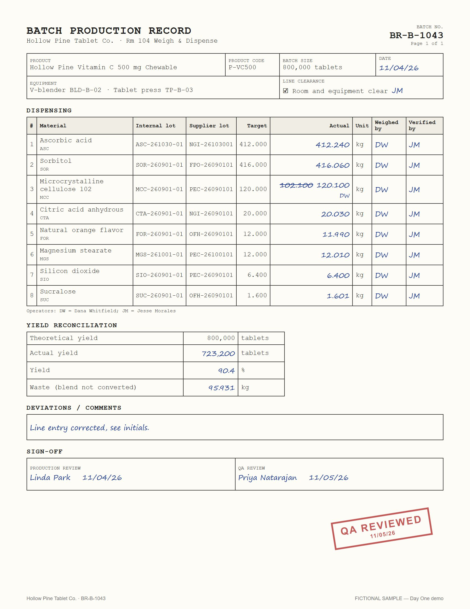

Hollow Pine Tablet Co. › Your integration
Your integration
Seven stages. Each one moves a piece of the plant's work from the old way to Kevin, with you checking every step. Nothing posts until you say so.
stage 2 of 7
Ledger time Wed Nov 4, 2026 · 10:20
Progress 2 of 7 done
✓
0 · Meet KevinWho does what, and how Kevin works
✓
1 · Your spreadsheetsInventory workbook, vendors, open POs posted
done2
2 · Your paperBatch records read and confirmed
4 of 73
3 · Your products and schedule10 products, the next four weeks
4
4 · Suppliers and spend rulesStanding per supplier, Kevin's limits
5
5 · Your first orderForecast, quotes, approval, delivery, QC, paid
6
6 · Your books and the ERPMatched, exported, reconciled
7
7 · Day to dayThe brief, the map, the trends
KKevin · stage 2, your paper for Ray
Four records are in. Three to go: BR-B-1044, BR-B-1045 and BR-B-1046. Drop them in the folder or open each one; I read it, you check it, then it posts.
How it is done today the old way

Every batch is written on a paper record in Weigh & Dispense: lots, targets, what was weighed, initials. The binder goes to the office at the end of the week.
Marcy types each record into the acquirer's ERP by hand: 7 to 9 lines, the yield, the waste. A struck-through number or a smudged one is a phone call to the floor.
Stock is updated when the binder is typed, so the forecast is a week behind the floor.
With Kevin you check, Kevin posts
- ✓BR-B-1041 · Vitamin C 500 · read, all within tolerance, confirmed by Rayposted
- ✓BR-B-1042 · Cal-Mag + D3 · grams on paper, kilograms in stock; Kevin converted, Ray confirmedposted
- ✓BR-B-1043 · Vitamin C 500 · a struck-through 102.100 corrected to 120.100 (DW); Kevin took the corrected valueposted
- ✓BR-A-2207 · Riverside's record · draws from the shared lot; flagged for the discrepancy checkposted
- 5BR-B-1044 · Electrolyte · high waste (13.8%), "compression sticking" in the margin; Kevin flags the yieldcheck it
- 6BR-B-1045 · Vitamin C 500 · the one that pushes ascorbic acid below its reorder pointwaiting
- 7BR-B-1046 · Cal-Mag + D3 · one smudged number; Kevin will askwaiting
So far, from the ledger counts, not estimates
19spreadsheet rows read
9questions Kevin asked
4records confirmed
1unit conversion caught
1correction honoured
0posted without a person